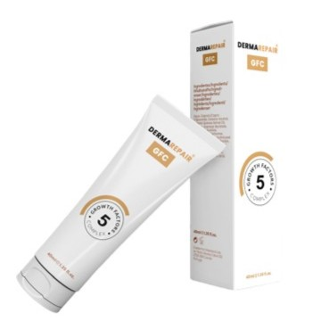

Otimizando a Cicatrização e Resultados em Transplantes Capilares
Descubra como DERMAREPAIR® eleva o padrão do pós-operatório, melhora a satisfação do paciente e consolida a excelência da sua prática clínica. 
Desafios Pós-Transplante: O Cuidado Essencial com a Zona Doadora
No transplante capilar, a atenção primária costuma recair sobre a área receptora. Contudo, a qualidade da cicatrização na área doadora é igualmente crucial para o resultado estético e funcional, preservando a elasticidade, vascularização e integridade da pele. A recuperação adequada da área doadora influencia diretamente a satisfação do paciente e a possibilidade de futuros procedimentos.
Qualidade da Cicatrização
Preservar a elasticidade e integridade da pele da área doadora é fundamental para um resultado estético natural e imperceptível.
Satisfação do Paciente
Um pós-operatório com recuperação rápida, menor desconforto e resultado superior na área doadora eleva a percepção de sucesso do paciente.
Viabilidade Futura
Uma área doadora bem preservada mantém as opções abertas para futuros procedimentos, caso sejam necessários.
Problemas e Desconfortos Comuns na Área Doadora
Apesar dos avanços nas técnicas de transplante capilar, a área doadora pode apresentar desafios no pós-operatório que afetam o conforto e a recuperação do paciente. DERMAREPAIR® foi desenvolvido para mitigar esses problemas.
Cicatrização Lenta/Deficiente
O processo de cicatrização pode ser prolongado, impactando o tempo de recuperação e o resultado estético.
Desconforto e Irritação
Coceira, sensibilidade e vermelhidão são comuns na área doadora, causando incômodo significativo ao paciente.
Qualidade Estética Inferida
Cicatrizes visíveis, pele com textura alterada ou perda de elasticidade podem comprometer o resultado final.
A Solução: DERMAREPAIR® e o Complexo GFC
Após anos de pesquisa e desenvolvimento, DERMAREPAIR® introduz uma abordagem científica inovadora para o cuidado pós-operatório. No centro de sua fórmula está o exclusivo Complexo de Fatores de Crescimento (GFC), uma sinergia de cinco proteínas sinalizadoras que orquestram a reparação e regeneração tecidual, mimetizando o processo fisiológico natural do corpo, sendo o único creme tópico no mercado com essa composição única.
Como atuam os Fatores de Crescimento do DERMAREPAIR® nos folículos e couro cabeludo?
Ação Detalhada do DERMAREPAIR® e do Complexo GFC
A literatura mundial destaca que o folículo piloso é uma estrutura altamente organizada, sujeita a mudanças cíclicas durante seu desenvolvimento. O ciclo e o crescimento capilar são orquestrados por processos moleculares complexos, dependendo da comunicação celular mediada por citocinas, como fatores de crescimento.
O DERMAREPAIR® Creme Reparador contém um exclusivo Complexo de Fatores de Crescimento da Pele, extraído da Proteína de Soro. Suas particularidades incluem a capacidade de aumentar a divisão celular de fibroblastos e de células jovens da pele, além de atuar como um estimulador potente dos folículos pilosos.
PDGF
Melhora a circulação periférica e auxilia na formação de capilares que nutrem os folículos. Ativa células mesenquimais e fibroblastos, essenciais para a saúde e regeneração folicular.
Complexo de 5 Fatores de Crescimento
A sinergia única de cinco fatores de crescimento essenciais para a reparação e regeneração tecidual.
TGF
Estimula o crescimento de fibroblastos e queratinócitos, células cruciais para a formação da haste capilar e cicatrização do couro cabeludo.
FGF
Melhora a circulação periférica nos folículos pilosos, estimulando as fases do ciclo capilar. Promove a proliferação e migração de queratinócitos.
EGF
Estimula a proliferação de queratinócitos e a deposição de matriz extracelular, fundamental para a cicatrização da pele e regeneração folicular.
IGF
Mediar o crescimento celular e a sobrevivência de diferentes células, incluindo as foliculares. Colabora com outros FCs na cicatrização de feridas.
Evidências Científicas e Resultados Clínicos
A eficácia do DERMAREPAIR® é suportada por dados quantitativos robustos de estudos laboratoriais e clínicos.
Aumento significativo na síntese de:
Levando a uma redução no tempo de cicatrização:
Redução no Tempo de Cicatrização (Área Doadora)
Diferenciais do DERMAREPAIR®
| Característica | Detalhe Técnico | Impacto Clínito |
|---|---|---|
| Origem do GFC | Soro de leite bovino concentrado e ativado não-enzimaticamente | Biocompatibilidade e alta biodisponibilidade |
| Composição Exclusiva | Único creme com 5 FCs essenciais em sinergia (PDGF+TGF+FGF+EGF+IGF) | Reprodução integral e otimizada do processo fisiológico de reparação |
| Eficácia Validada | Testes in vivo e in vitro | Melhoria objetiva da qualidade tecidual, hidratação e firmeza da pele cicatricial |
| Segurança | Não irritante; sem parabenos, petrolatos ou parafinas | Perfil ideal para uso pós-operatório sensível e prolongado |
Experiência Clínica Internacional
A confiança no DERMAREPAIR® é construída sobre resultados consistentemente positivos em cenários clínicos reais. O produto é parte integrante dos protocolos de centros de transplante capilar na Europa e no Oriente Médio, com um histórico comprovado de sucesso e satisfação.
Case Study: INSPARYA Group (PT, ES, IT, Omã)
5+ anos
de uso contínuo em protocolo
10.000+
transplantes realizados
94%
de satisfação dos pacientes
Protocolo e Demais Orientações ao Paciente

Observe a orientação explícita pra uso do Dermarepair/Dermaexel na zona doadora.
Protocolo Clínico Otimizado
A integração do DERMAREPAIR® na prática clínica é simples e direta. O protocolo a seguir foi refinado com base na experiência de mais de 10.000 transplantes para maximizar os resultados tanto na área doadora quanto na receptora.
Área Doadora
- Início: Imediato pós-procedimento.
- Frequência: 2x ao dia (manhã e noite).
- Duração: Mínimo de 10 dias.
- Resultados Esperados: Cicatrização 30-40% mais rápida vs. placebo.
- Técnica: Massagem circular suave para focar na remodelação tecidual.
Área Receptora (Opcional)
- Início: Após a queda das crostas (Dia 4-5).
- Benefício Principal: Estímulo à fase anágena precoce dos folículos.
- Técnica: Aplicação suave, sem massagem vigorosa.
Vídeo: Demonstração de Aplicação
Demonstração visual do protocolo de aplicação na área doadora.
Proposta de Valor para a Sua Clínica
Integrar DERMAREPAIR® em seus protocolos oferece uma proposta de valor clara, elevando a qualidade e a reputação da sua clínica.
Inovação Tecnológica
Posicione sua clínica na vanguarda do pós-operatório capilar com um produto de alta tecnologia e fundamentação científica robusta.
Diferencial Competitivo
Destaque-se no mercado oferecendo um cuidado pós-operatório que vai além do convencional, atraindo mais pacientes e solidificando sua posição.
Otimização Financeira e Rentabilidade
Aumente a eficiência dos procedimentos e a percepção de valor, contribuindo para uma maior rentabilidade da clínica.
Possibilidade de Private Label
Desenvolva uma linha exclusiva para sua clínica, aumentando a sua marca, oferecendo um diferencial competitivo e potencializando o lucro indireto.
Proposta de Teste Clínico Controlado
Convidamos você a comprovar os benefícios do DERMAREPAIR® diretamente na sua prática clínica. Propomos um teste controlado, simples e objetivo, com todo o suporte necessário da nossa equipe para que você possa avaliar os resultados em seus próprios pacientes.
Protocolo Sugerido:
- Pacientes: 3 a 4
- Foco: Área doadora.
- Monitoramento: Dias 0, 5 e 10 (envio de fotos feitas pelo paciente).
Nosso Suporte:
- Fornecimento de amostras gratuitas.
- Apoio na análise comparativa dos resultados.
Quem Somos: EXELDERMA UNIPESSOAL LDA
Pioneirismo, Inovação e Evidência Científica em Fatores de Crescimento. Desde 2014, focamos na pesquisa, desenvolvimento e aplicação clínica de Fatores de Crescimento (GFC) para regeneração da pele e procedimentos estéticos avançados.
Nossa Trajetória:
üìç 2014
- Fundação da Exelderma UNIPESSOAL LDA
- Importação do primeiro lote de DERMAEXEL® da Suíça para testes e ensaios clínicos
üìç 2014‚Äì2018
- Desenvolvimento do conceito dos GFC como reparadores e regeneradores da pele
üìç 2018‚Äì2020
- Primeira produção industrial em Portugal (DERMAEXEL® GFC 40ml)
- Lançamento do DERMAEXEL® GFC CREME
- Introdução dos GFCs em protocolos médicos e transplante capilar
üìç 2022‚Äì2023
- Conclusão e publicação do estudo clínico FaCTOS
- Finalização do estudo sobre prevenção de estrias
üìç 2024‚Äì2025
- Lançamento do DERMAEXEL® ANTI-ESTRIAS
- Rebranding com novo logotipo DERMAREPAIR®
- Introdução de embalagem de 400ml para uso clínico especializado